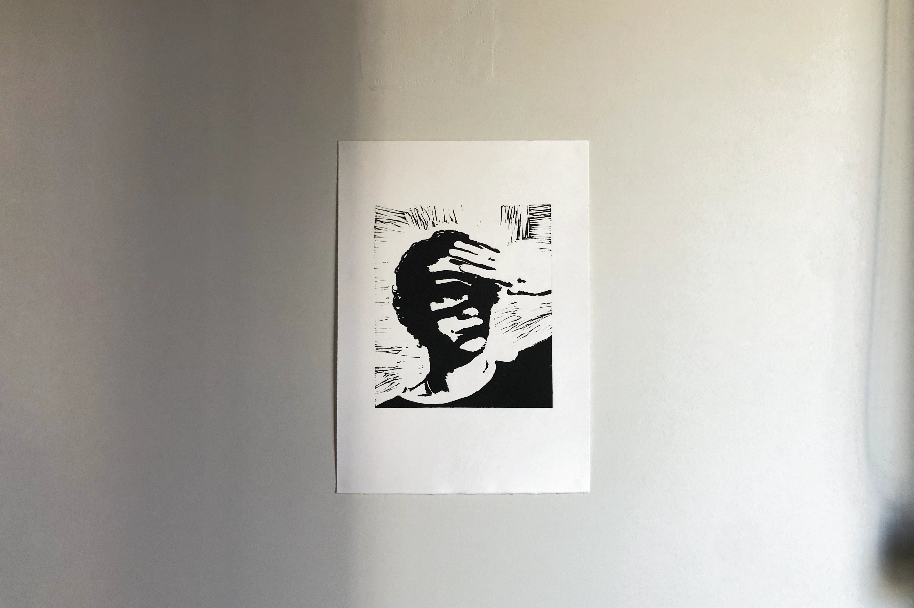
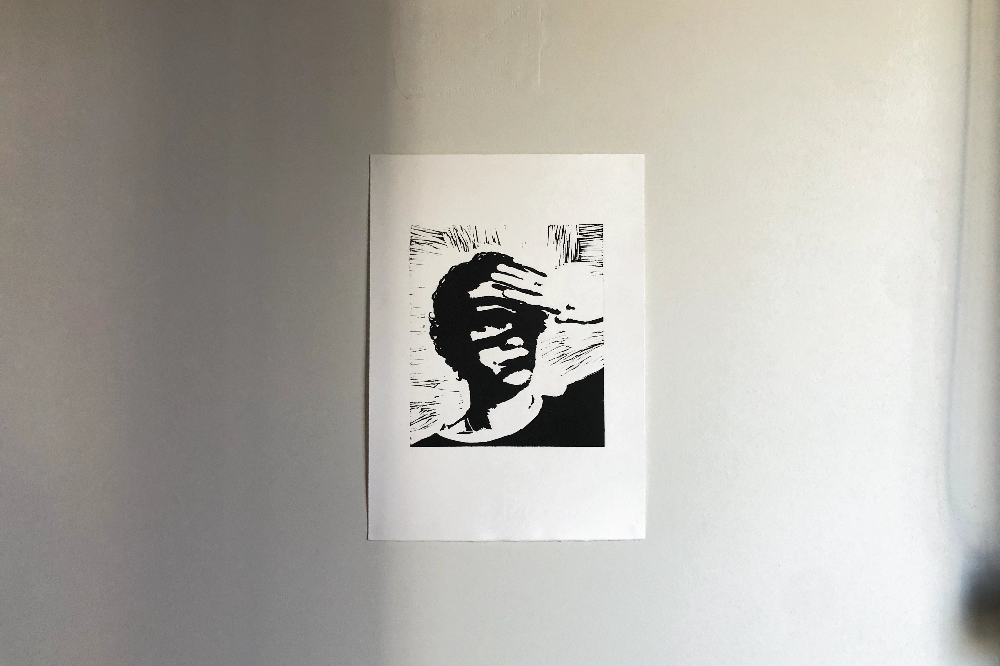
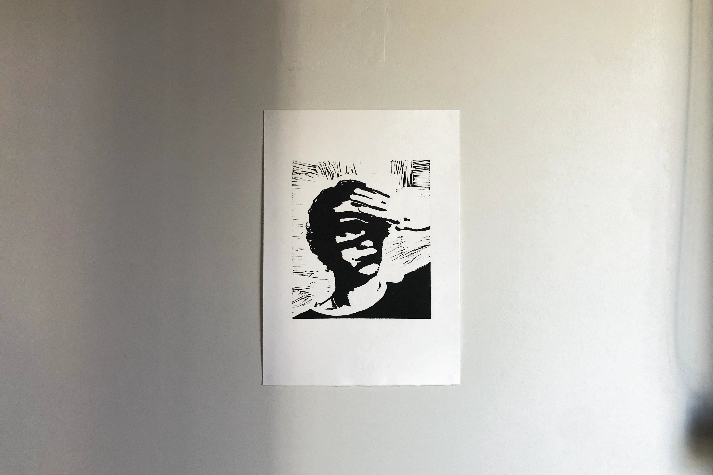

Print, edition 3/4
 

Phoebe Li Portfolio
Application for MC250
Master of Communication Design
Semester 2, 2025
SUNBURN
Next: Loiter Here
Previous: Memo Glove
Illustration
A linocut print inspired by Dominic Fike's 2023 studio album, Sunburn. Printed with water-based ink on acid-free rag paper. Influenced by the bright yet introspective energy of the album's sound; displayed by the east-facing window of my living room as a reminder to get some sunlight.
Print, edition 3/4
